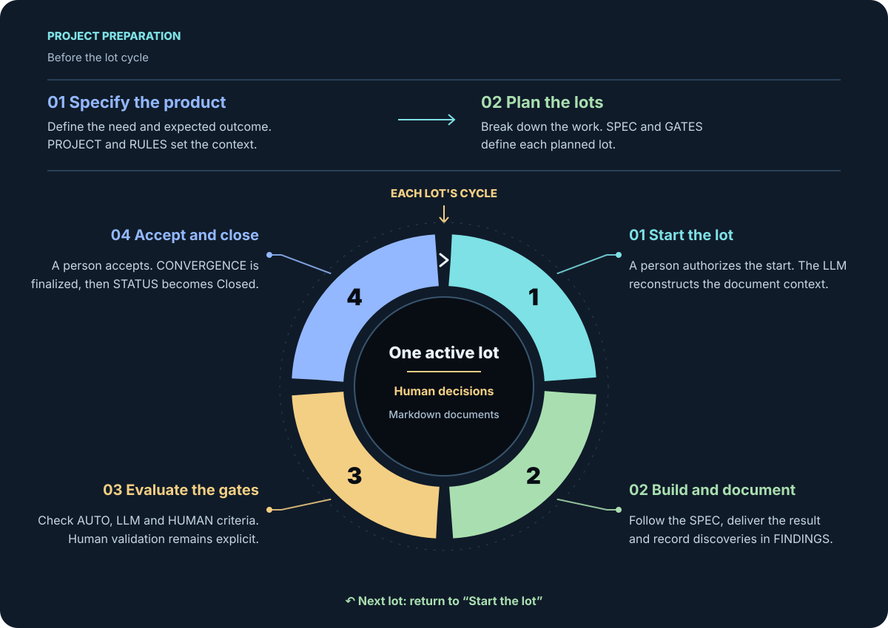

AI-centric
The same LLM can generate the software and manage document tracking. Humans retain intent, trade-offs, and acceptance.
Spec-Driven Development · AI-centric
S.A.W. (SDD Another Way) 3.2 organizes development around documented intent, one lot of work after another, and explicit validation. An LLM can do the work and keep the documents up to date; people make the decisions reserved for them.
The method is rooted in Spec-Driven Development (SDD): starting from a shared specification to connect requirements, implementation, and validation. It stems from Pro-Spec 3, a method created and refined over dozens of implementations with AI.
A project can cover an entire application, a major feature, or even a complex visual control. Multiple projects can belong to an Application placed above them, with its general rules and coordination documents. They can advance in parallel if an explicit architectural decision defines their independence and the management of their shared resources; each project maintains only one active lot at a time.
Overview
Product specification and lot planning prepare the project. People can divide the work into lots or prepare that breakdown with an LLM. Each lot then follows the same cycle, from its start through closure.

↶ After closure, resume with the next planned lot. Only one lot occupies the active slot of a project.
The lifecycle of a lot
The prompt can be short because the rules, state, decisions, and validations reside in project files. The diagram below shows what the LLM actually does.
They authorize the start. If several Planned lots could come next, the LLM checks dependencies and asks a human to resolve any ambiguity.
It reads README.md, PROJECT.md, RULES.md, applicable decisions from LEDGER.md, then STATUS.md and lot files. HISTORY.md is mandatory and traces significant operations.
SPEC-xxx.md defines the expected result; GATES-xxx.md defines closure conditions. The LLM performs work, enriches FINDINGS-xxx.md , and documents approved semantic changes.
The LLM can launch an AUTO gate and analyze an LLMgate. An HUMAN gate requires a dated, named human validation. The evaluated result must remain identifiable.
On request, the LLM checks all active gates, each requirement, and final processing of every finding. It prepares CONVERGENCE-xxx.md, records required human decisions in LEDGER.md, then presents the result and its deviations. A failed or untested gate prevents closure.
After acceptance, the LLM finalizes convergence and approved updates, then records Closed in STATUS.md last among state and content documents. The project can then proceed to the next lot.
In practice
The same LLM can generate the software and manage document tracking. Humans retain intent, trade-offs, and acceptance.
Markdown is sufficient for the protocol. The software language, OS, IDE, and LLM provider remain up to the project's choice.
Requirements, discoveries, decisions, validations, and deviations remain readable from session to session until closure.
SDD Reference: Apoorv Gupta, Spec-Driven Development: A Spec-First Approach to AI-Native Engineering, Microsoft for Developers, June 10, 2026.
Method Reference: Olivier Dahan, Microsoft MVP, creator of S.A.W. (SDD Another Way); normative specification 3.2, revision 3.2.0-2026-09-27.
Full Specification: Read the S.A.W. (SDD Another Way) 3.2 Normative Specification.